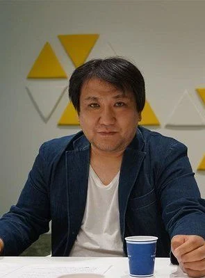

Dragon Ball Super: Broly
Inici
Director
Personajes
Cinemes/Streaming
Opinion
Media
Niveles de Poder
Director
Nombre: Tatsuya Nagamine
Trayectoria: Empezó su carrera trabajando en diferentes proyectos de Toei Animation. Actualmente dirige One Piece
Otras películas relevantes: One Piece Film: Z

Hatsuya Nagamine